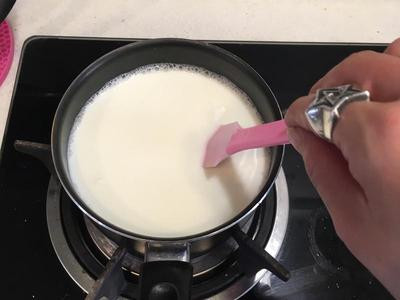

雞蛋牛奶布丁-無添加香草精（電鍋版）
市售布丁總是會添加一些香草精或者是食用色素，想要給孩子們吃的健康又安心，於是決定自己動手做，布丁其實很簡單。
| 食材 （7 人份）15 分鐘 |
|---|
| 布丁體 |
|---|
| 牛奶 | 500cc |
| 蛋 | 4顆 |
| 細砂糖 | 50g |
| 焦糖體 |
|---|
| 細砂糖 | 80g |
| 熱水 | 50cc |
| 熱水（起鍋後倒入焦糖中） | 40cc |
1 先把所有的材料準備好（這裡備的材料是7杯布丁的量） 。 |
|
2 500C.C.的鮮奶倒入鍋中。 |
|
3 倒入50克的細砂糖。 |
|
|  | 4 以中小火煮牛奶將細砂糖溶化，過程中不要煮滾！只要讓細砂糖溶化即可 （可稍加攪拌加速砂糖溶化） 等待牛奶冷卻的同時便可製作焦糖體 。 |
5 80克的細砂糖倒入50C.C.的熱水 。 |
|
6 倒入水和砂糖之後左右搖晃，防止砂糖結塊，做焦糖的過程中也要稍微的搖晃鍋子，讓焦糖均勻 。 |
|
7 焦糖上色前先準備好布丁的杯子，因為焦糖一旦開始變色之後的速度會很快！ |
|
8 從細砂糖變成焦糖色，大約6～7分鐘左右，等到焦糖上色立刻把熱水40C.C.倒入鍋中並搖晃鍋子，這時候要千萬小心因為熱水倒入焦糖中時會噴濺 。 |
|
9 把焦糖分別倒入布丁瓶中，動作要迅速，否則焦糖會凝固 。 |
|
10 四顆雞蛋均勻打散後，倒入剛剛冷卻的牛奶，記得牛奶一定要冷卻喔，不然倒進去就變成蛋花湯唷！ |
|
11 混合好的雞蛋和牛奶，細篩，篩兩次 。 |
|
12 輕輕的倒入布丁液，速度不要太快才不會有氣泡，若真的有氣泡產生可以用小湯匙把氣泡撈掉。 |
|
13 用米杯裝¾的水倒入電鍋中 。 |
|
14 把製作好的布丁液放在入電鍋中，電鍋上左右各擺一隻筷子，將鍋蓋蓋上，大約15分鐘即可完成 。 |
|
15 等電鍋跳起來冷卻後放入冰箱大約三到5小時後， 就是好吃的雞蛋布丁了 。 |